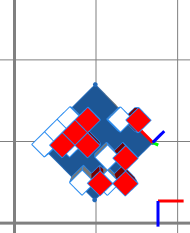
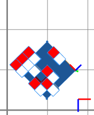

translate operation
Syntax
translate(mode, coordSystem, x, y, z)
Parameters
- mode (selector)
abs, rel Absolute or relative mode. Absolute means the position is set to the given value, relative means the translation is added. - coordSystem (selector)
scope, pivot, object, world Name of the coordinate system in which the following coordinates are given. - x, y, z (float)
The coordinates define a position in the coordSystem to which the current shape's scope (scope.t) is set if the mode is abs or a translation vector to apply if the mode is rel.
Description
The translate operation translates the scope. The coordinates can be defined in any coordinate system, and the translation can either be absolute (= set to x,y,z) or relative (= add the x,y,z vector). This operation manipulates the scope position (scope.t attribute).
Related
Examples
Translate a shape along the world x-axis
 |
version "2009.2"
Init-->
split(x) { '0.2 : split(z) { '0.2 : PP }* }*
PP-->
43%:
primitiveCube()
X
translate(rel, world, 2, 0, 0)
color("#ff0000")
X
else:
NIL
The red cubes are copies of the white cubes, translated by two units along the x-axis of the world coordinate system (i.e. the red axis on the bottom right).
|
Translate a shape along the object x-axis
 |
version "2009.2"
Init-->
split(x) { '0.2 : split(z) { '0.2 : PP }* }*
PP-->
43%:
primitiveCube()
X
translate(rel, object, 2, 0, 0)
color("#ff0000")
X
else:
NIL
|
The red cubes are copies of the white cubes, translated by two units along the x-axis of the object coordinate system (i.e. the red axis in the center).
Copyright ©2008-2020 Esri R&D Center Zurich. All rights reserved.